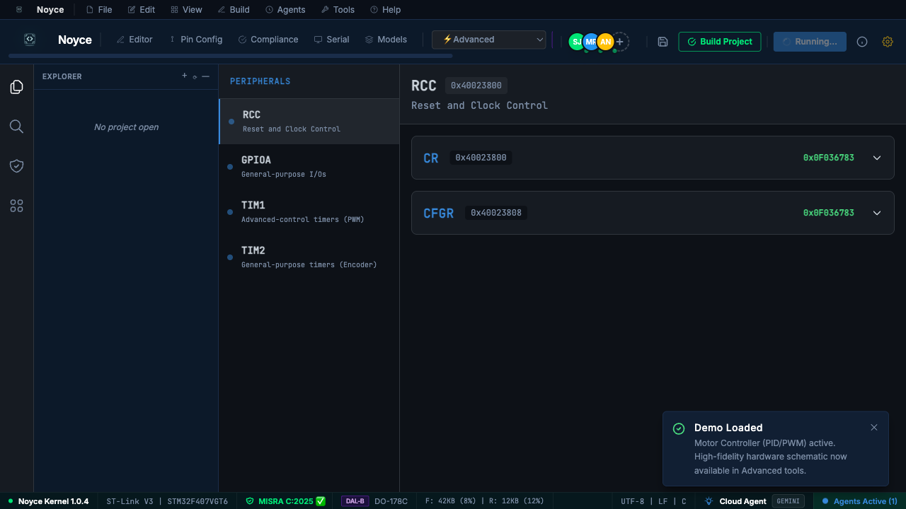
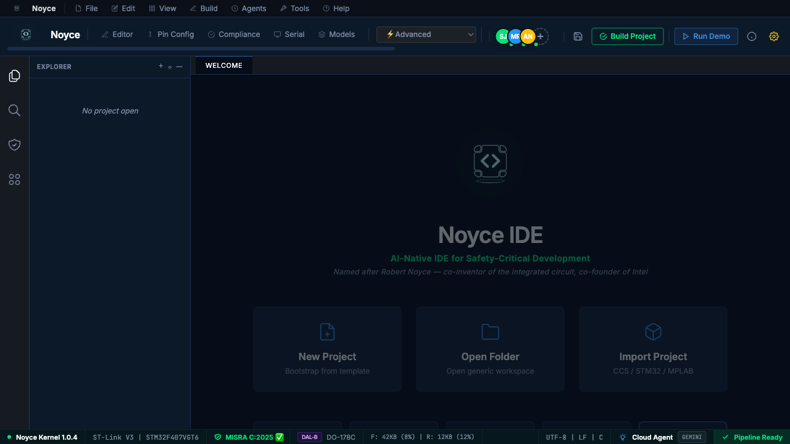

The embedded IDE that thinks in safety requirements.
Noyce is an AI-native development environment for embedded & safety-critical systems. A 6-agent pipeline turns requirements into traceable, DO-178C-aligned firmware — with real-time hardware debug and live compliance dashboards baked in.

Built for flight-grade firmware
FEATURES6-Agent Pipeline
Requirement → architecture → code → test → verification → compliance. Each step traceable.
Hardware Debug
Live JTAG/SWD tracing, register inspection, and ITM streams — wired straight into the editor.
Traceability Graph
Visualize how every requirement maps to code, tests, and verification artifacts in real time.
DO-178C Compliance
DAL-A through DAL-D dashboards. Evidence packs generated from your actual dev activity.
STM32 / ARM Native
First-class support for STM32, ARM Cortex-M, and common RTOSes. Import existing projects in seconds.
Tauri Desktop
Rust-backed native binaries. Cold-start in under a second — with none of the Electron bloat.
See it in motion
SCREENSHOTS